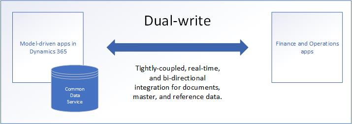

Dual-Write-Übersicht
[!include[banner](../../includes/banner.md)][!include[rename-banner](~/includes/cc-data-platform-banner.md)]Was ist Dual-Write?
Duales Schreiben ist eine vordefinierte Infrastruktur, die eine Interaktion zwischen Customer Engagement-Apps und Finance and Operations-Apps nahezu in Echtzeit ermöglicht. Wenn Daten über Kunden, Produkte, Personen und Abläufe über Anwendungsgrenzen hinweg fließen, werden alle Abteilungen eines Unternehmens in die Lage versetzt, diese Daten zu nutzen.
Dual-Write bietet eine eng gekoppelte, bidirektionale Integration zwischen Finance and Operations Anwendungen und Dataverse Anwendungen. Jede Datenänderung in Finance and Operations Anwendungen führt zu Schreibvorgängen in Dataverse, und jede Datenänderung in Dataverse führt zu Schreibvorgängen in Finance and Operations Anwendungen. Dieser automatisierte Datenfluss bietet eine integrierte Benutzererfahrung über die Anwendungen hinweg.

Dual-Write hat zwei Aspekte: einen Infrastruktur Aspekt und einen Anwendung Aspekt.
Infrastruktur
Die Dual-Write-Infrastruktur ist erweiterbar und zuverlässig und umfasst die folgenden Hauptmerkmale:
- Synchroner und bidirektionaler Datenfluss zwischen Anwendungen
- Synchronisierung zusammen mit Spiel-, Pausen- und Aufholmodi zur Unterstützung des Systems im Online- und Offline-/Asynchronmodus.
- Fähigkeit zur Synchronisierung der Anfangsdaten zwischen den Anwendungen
- Kombinierte Ansicht der Aktivitäts- und Fehlerprotokolle für Datenadministratoren
- Möglichkeit, benutzerdefinierte Benachrichtigungen und Schwellenwerte zu konfigurieren und Benachrichtigungen zu abonnieren
- Intuitive Benutzeroberfläche (UI) für Filterung und Transformationen
- Fähigkeit, Abhängigkeiten und Beziehungen zwischen den Entitäten festzulegen und anzuzeigen
- Erweiterbarkeit sowohl für Standard- als auch für benutzerdefinierte Tabellen und Karten
- Zuverlässige Verwaltung des Lebenszyklus von Anwendungen
- Out-of-Box-Einrichtungserfahrung für neue Kunden
Bewerbung
Duales Schreiben erstellt eine Zuordnung zwischen Konzepten in Finance and Operations-Apps und Konzepten in Customer Engagement-Apps. Diese Integration unterstützt die folgenden Szenarien:
- Integrierte Masterdaten von Debitoren
- Zugang zu Kundenkarten und Belohnungspunkten
- Einheitliche Produktbeherrschung
- Bewusstsein für die Organisationshierarchie
- Integrierte Masterdaten von Kreditoren
- Zugang zu Finanz- und Steuerdaten
- Erfahrung mit Bedarfspreismodulen
- Integrierte Prospect-to-Cash-Erfahrung
- Fähigkeit, sowohl interne Anlagen als auch Kundenanlagen durch Außendienstmitarbeiter zu bedienen
- Integrierte Procure-to-Pay-Erfahrung
- Integrierte Aktivitäten und Notizen für Kundendaten und Dokumente
- Fähigkeit, die Verfügbarkeit und die Details der Bestände aus dem Lagerbestand nachzuschlagen
- Projekt-zu-Bargeld-Erfahrung
- Fähigkeit zur Handhabung mehrerer Adressen und Rollen durch das Parteikonzept
- Verwaltung einer einzigen Quelle für Benutzer
- Integrierte Kanäle für Retail und Marketing
- Sichtbarkeit von Werbeaktionen und Rabatten
- Anforderung für Dienstfunktionen
- Rationalisierte Dienstvorgänge
Die wichtigsten Gründe für die Verwendung von Dual-Write
Dual-Write bietet Datenintegration über Microsoft Dynamics 365 Apps hinweg. Dieser robuste Rahmen verbindet Umgebungen und ermöglicht die Zusammenarbeit verschiedener Geschäftsanwendungen. Hier sind die wichtigsten Gründe, warum Sie Dual-Write verwenden sollten:
- Dual-Write bietet eine eng gekoppelte, echtzeitnahe und bidirektionale Integration zwischen Finance and Operations-Anwendungen und modellgesteuerten Anwendungen in Dynamics 365. Diese Integration macht Microsoft Dynamics 365 zum One-Stop-Shop für alle Ihre Geschäftslösungen. Kunden, die Dynamics 365 Finance und Dynamics 365 Supply Chain Management verwenden, aber für das Kundenbeziehungsmanagement (CRM) Nicht-Microsoft-Lösungen einsetzen, entscheiden sich für Dynamics 365 wegen der Unterstützung von Dual-Write.
- Daten von Kunden, Produkten, Operationen, Projekten und dem Internet der Dinge (Internet of Things, IoT) fließen automatisch durch Dual-Write zu Dataverse. Diese Verbindung ist nützlich für Unternehmen, die an Power Platform-Erweiterungen interessiert sind.
- Die Dual-Write-Infrastruktur folgt dem No-Code/Low-Code-Prinzip. Es ist nur ein minimaler technischer Aufwand erforderlich, um die Standard-Tabelle-zu-Tabelle-Zuordnungen zu erweitern und um benutzerdefinierte Zuordnungen aufzunehmen.
- Dual-Write unterstützt sowohl den Online- als auch den Offline-Modus. Microsoft ist das einzige Unternehmen, das Unterstützung für den Online- und Offline-Modus bietet.
Was bedeutet duales Schreiben für Entwickler und Architekten von Customer Engagement-Apps?
Duales Schreiben automatisiert den Datenfluss zwischen Finance and Operations-Apps und Customer Engagement-Apps. Duales Schreiben besteht aus zwei AppSource-Lösungen, die auf Dataverse installiert sind. Die Lösungen erweitern das Entitätsschema, die Plugins und die Workflows in Dataverse, damit sie auf ERP-Größe skaliert werden können. Für eine erfolgreiche Implementierung müssen Entwickler und Architekten von Customer Engagement-Apps diese Änderungen verstehen und mit ihren Kollegen bei Finance and Operations-Apps zusammenarbeiten.
Um mit Finance and Operations-Anwendungen Parität zu schaffen, nimmt duales Schreiben einige entscheidende Änderungen am Dataverse-Schema vor. Wenn Sie den Plan verstehen, können Sie in Zukunft einige Entwurfs- und Entwicklungsarbeiten vermeiden.
Wenn das AppSource-Paket für duales Schreiben installiert ist, verfügt Dataverse über neue Konzepte wie Unternehmen und Partei. Diese Konzepte helfen Anwendungen, die auf Dataverse basieren, einschließlich Dynamics 365 Sales, Dynamics 365 Marketing, Dynamics 365 Customer Service und Dynamics 365 Field Service dabei, nahtlos mit Finance and Operations-Apps zu interagieren.
Aktivitäten und Notizen werden vereinheitlicht und erweitert, um sowohl die C1 (Benutzer des Systems) als auch die C2 (Kunden des Systems) zu unterstützen.
Um Datenverlust während der Währungsübertragung zwischen Finance and Operations-Apps und dem Dataverse zu verhindern, können Sie die Anzahl der Dezimalstellen im Währungsdatentyp der Customers Engagement-Apps erweitern. Die Funktion übersetzt automatisch vorhandene Zeilen auf der Metadatenebene in den neuen erweiterten Status. Während dieses Vorgangs wird der Währungswert in Dezimaldaten und nicht in Gelddaten umgerechnet, und der Währungswert unterstützt 10 Dezimalstellen. Diese Funktion ist aktiviert, und Unternehmen, die nicht mehr als 4 Dezimalstellen benötigen, müssen dies nicht aktivieren. Weitere Informationen finden Sie unter Migration vom Währungsdatentyp für duales Schreiben.
Datumsgültigkeit (This is an external link) wird Dataverse hinzugefügt. Sie wird vergangene, gegenwärtige und zukünftige Daten in der gleichen Entität unterstützen.
Produkt-Einheitenumrechnungen werden für Produkte, Angebote, Bestellungen und Rechnungen unterstützt.
Weitere Informationen zu bevorstehenden Änderungen finden Sie unter Neuerungen oder Änderungen beim dualen Schreiben (This is an external link).